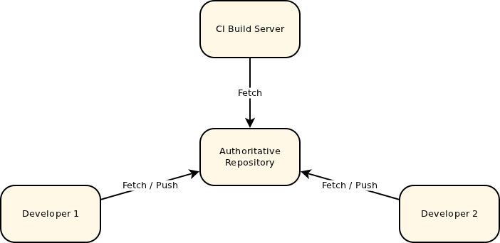

This is a small introduction to Gerrit, a web-based code review tool built on top of the git version control system.
Why do code review?
It has a lot of disadvantages:
- It makes you look dumb. Peer reviews and comments ARE meant to humiliate you in front of the whole team.
- It decreases productivity of each developer, since further work on the submitted code is impossible until a successful review, and takes even longer if multiple reviewers are involved.
- After successfully passing a review, the developer could commit a different piece of code, by mistake or otherwise
- Code review costs a lot of money. It's not worth of the actual return on this kind of investment.
- Each time you do code review, an innocent kitten dies. It's a fact...
But it has many advantages, like:
- Finding bugs early, when they are cheap to fix.
- Coding standards compliance. Code review helps to maintain consistent coding style across the company.
- Teaching and sharing knowledgeConsistent design and implementation. During review team members gain better understanding of the code base and learn from each other.
- Consistent design and implementation. Peer review helps to maintain a level of consistency in software design and implementation.
- Higher software security. Applications that require a high level of security benefit from targeted security reviews.
- Team cohesion. Review discussions save team members from isolation and bring them closer to each other.
- Confidence of stakeholders. You build confidence of stakeholders about the technical quality of the execution.
Typical repository representation
This is a typical representation of a central git repository.
Any team with more than one member has a central source repository of some kind (or they should). Git can theoretically work without such a central location but in practice there is usually a central repository. This serves as the authoritative copy of what is actually in the project. This is what everyone fetches from and pushes to and is generally where build servers and other such tools get the source from.
Gerrit repository representation

Gerrit is deployed in place of this central repository and adds an additional concept, a store of pending changes. Everyone still fetches from the authoritative repository but instead of pushing back to it, they push to this pending changes location. A change can only be submitted into the authoritative repository and become an accepted part of the project once the change has been reviewed and approved.
Like any repository hosting solution, Gerrit has a powerful access control model. Users can even be granted access to push directly into the central repository, bypassing code review entirely. Gerrit can even be used without code review, used simply to host the repositories and controlling access. But generally it’s just simpler and safer to go through the review process even for users who are allowed to directly push.
Demo repository location:
git clone https://github.com/lrochefort-william/demo-gerrit.git